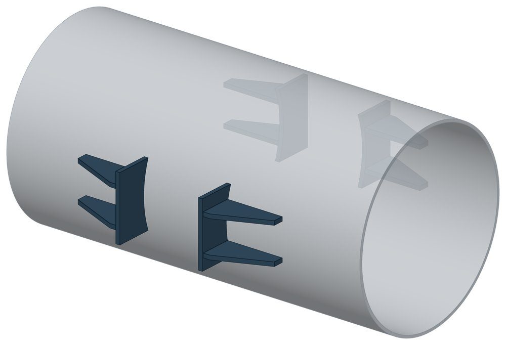
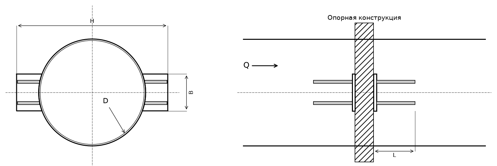

Опора неподвижная двухупорная сальниковых компенсаторов ТС-665
Двухупорная опора для двухсторонних сальниковых компенсаторов. Четыре упора стоят не на трубе, а на корпусе компенсатора, по два с каждой стороны опорной конструкции.

- Диаметр трубы Dн
- 530–820 мм
- Документ
- Серия 5.903-13 вып. 7-95
- Исполнений
- 4
- Осевая Q
- до 90 кН
- Масса
- 32–41,6 кг
- Сталь
- Листовые детали — Ст3сп5 ГОСТ 14637-89. Для холодного климата — низколегированная сталь, в том числе 09Г2С; размеры опоры при этом не меняются.
- Покрытие
- По альбому серии — окраска по грунту, кроме поверхностей под сварку. Вид покрытия согласуется при заказе.
- 3D-модели
- у всех исполнений
Применение и монтаж
Назначение: где применяется
Трубопроводы Dн 530–820 мм, корпус компенсатора диаметром D от 580 до 878 мм. Держит осевую силу Q от 60 до 90 кН. Упоры опираются на несущие балки опорной конструкции.
Монтаж: как устанавливается
Упоры приваривают к корпусу сальникового компенсатора. К опорной конструкции они прилегают свободно. Зазор между компенсатором и нижней несущей балкой заполняют прокладками из листовой стали 5–10 мм.
Отличия от соседних типов
Опора на самой трубе, без компенсатора — двухупорная ТС-660. Упоры такие же по устройству, отличается вырез плиты: он сделан по диаметру корпуса компенсатора, а не трубы.
Габаритная схема ТС-665

Состав комплекта на одну опору
| Упор (плита с двумя рёбрами) | 4 шт. |
Таблица исполнений ТС-665
| Обозначение | Код ПРОМБУРГ | Dнмм | Стенка Sмм | QкН | Диаметр компенсатора Dмм | Габарит Нмм | Ширина упора Вмм | Длина упора Lмм | Массакг | 3D |
|---|---|---|---|---|---|---|---|---|---|---|
| ТС-665.00.00* | ПБ-665-0530-1 | 530 | 8 | 60 | 580 | 816 | 200 | 226 | 32 | 3D |
| ТС-665.00.00-01* | ПБ-665-0630-1 | 630 | 10 | 70 | 684 | 920 | 240 | 226 | 33,6 | 3D |
| ТС-665.00.00-02* | ПБ-665-0720-1 | 720 | 10 | 80 | 774 | 1012 | 280 | 266 | 40 | 3D |
| ТС-665.00.00-03* | ПБ-665-0820-1 | 820 | 12 | 90 | 878 | 1114 | 300 | 266 | 41,6 | 3D |
* Примечания к исполнениям:
- ТС-665.00.00 — L: 200 → 226, ошибка сайта: в графу L попала ширина B; альбом, лист 64;
- ТС-665.00.00-01 — L: 240 → 226, ошибка сайта: в графу L попала ширина B; альбом, лист 64;
- ТС-665.00.00-02 — L: 280 → 266, ошибка сайта: в графу L попала ширина B; альбом, лист 64;
- ТС-665.00.00-03 — L: 300 → 266, ошибка сайта: в графу L попала ширина B; альбом, лист 64;
Чтобы заказать, сообщите обозначение и код ПРОМБУРГ: +7 (499) 325-51-35, promburg@yandex.ru.
Нормативные документы
- Серия 5.903-13 вып. 7-95 Опоры трубопроводов неподвижные. Рабочие чертежи (PDF, 127 с.) — документ, по которому изготавливается изделие
- ГОСТ 14637-89 Прокат толстолистовой из углеродистой стали обыкновенного качества — редакция, на которую ссылается альбом серии; действующую редакцию уточняйте
Связанные позиции
- Соседний тип: ТС-660 — неподвижная двухупорная
- Парная подвижная опора: ТС-624 — скользящая приварная (общий диапазон Dн 530–820)
Собрать узел с этим изделием
- Конструктор узла: собрать участок с компенсатором под свои данные труба, длина, среда, условия — состав узла и спецификация бесплатно
На трубу Dн 530–820 мм в каталоге
Позиции каталога с исполнениями на те же наружные диаметры трубы.
Детали трубопровода
- Днище стальное эллиптическое общих Dн: 4
- Отвод стальной крутоизогнутый 90°, 09Г2С общих Dн: 4
- Отвод стальной крутоизогнутый 90° общих Dн: 4
- Фланец стальной воротниковый общих Dн: 4
- Фланец стальной плоский приварной общих Dн: 4
- Заглушка стальная эллиптическая общих Dн: 2
- Переход стальной концентрический общих Dн: 1
Компенсаторы
- Компенсатор сильфонный 2ОПКР общих Dн: 4
- Компенсатор сильфонный 2ОПКР (ИЯНШ) 2ОПКРИ общих Dн: 4
- Компенсатор сильфонный 2СКУ.М 2СКУМ общих Dн: 4
- Компенсатор сильфонный 2СКУ.М (ИЯНШ) 2СКУМИ общих Dн: 4
- Компенсатор сильфонный 2СКУ.ППМ 2СКУППМ общих Dн: 4
- Компенсатор сильфонный 2СКУ.ППМ (ИЯНШ) 2СКУППМИ общих Dн: 4
- Компенсатор сильфонный 2СКУ.ППУ 2СКУППУ общих Dн: 4
- Компенсатор сильфонный 2СКУ.ППУ (ИЯНШ) 2СКУППУИ общих Dн: 4
- Компенсатор сильфонный 2СКУ.ППУ/ОЦ (ИЯНШ) 2СКУППУОЦИ общих Dн: 4
- Компенсатор сильфонный КС общих Dн: 4
- Компенсатор сильфонный КСО общих Dн: 4
- Компенсатор сильфонный КСО (ИЯНШ) КСОИ общих Dн: 4
- Компенсатор сильфонный КСОФ общих Dн: 4
- Компенсатор сильфонный ОПКР общих Dн: 4
И ещё 14 типов — в оглавлении каталога.
Другие опоры и подвески
- Опора неподвижная двухупорная ТС-660 общих Dн: 4
- Опора неподвижная четырёхупорная ТС-661 общих Dн: 4
- Опора неподвижная двухупорная усиленная ТС-663 общих Dн: 4
- Опора неподвижная четырёхупорная усиленная ТС-664 общих Dн: 4
- Опора неподвижная щитовая ТС-666 общих Dн: 4
- Опора неподвижная щитовая усиленная ТС-667 общих Dн: 4
- Опора неподвижная боковая ТС-668 общих Dн: 4
- Опора неподвижная хомутовая бескорпусная ТС-669 общих Dн: 4
- Опора неподвижная бугельная с корпусом ТС-671 общих Dн: 4
- Опора скользящая приварная ТС-624 общих Dн: 4
И ещё 74 типа — в оглавлении каталога.
Другие типы раздела
Неподвижные опоры тепловых сетей (ТС-659…ТС-671)
- Опора неподвижная хомутовая ТС-659
- Опора неподвижная двухупорная ТС-660
- Опора неподвижная четырёхупорная ТС-661
- Опора неподвижная двухупорная усиленная ТС-663
- Опора неподвижная четырёхупорная усиленная ТС-664
- Опора неподвижная щитовая ТС-666
- Опора неподвижная щитовая усиленная ТС-667
- Опора неподвижная боковая ТС-668
- Опора неподвижная хомутовая бескорпусная ТС-669
- Опора неподвижная хомутовая с корпусом ТС-670
- Опора неподвижная бугельная с корпусом ТС-671
Частые вопросы
Какую неподвижную опору выбрать: хомутовую, упорную, щитовую?
Выбор идёт по расчётной осевой силе и по тому, на что опора опирается. Малый диаметр и небольшая сила — хомутовая ТС-659. Нужна высота под изоляцию — хомутовая с корпусом ТС-670 или бугельная ТС-671. Труба проходит сквозь стенку — щитовая ТС-666, при большой силе усиленная ТС-667. Упор в балку или траверсу — двух- и четырёхупорные ТС-660, ТС-661, при больших нагрузках усиленные ТС-663, ТС-664.
По какому диаметру подбирать — Dн или Ду?
По наружному диаметру трубы Dн: именно он стоит в таблицах серии. Ду — условный проход, округлённая величина: Ду 100 соответствует Dн 108. В заявке указывайте Dн и толщину стенки трубы.
Какую нагрузку выдерживает опора?
Допускаемая нагрузка задана в таблице для каждого исполнения — она в первой группе колонок каждой карточки. Хомутовая ТС-659 — осевая Q от 5 до 25 кН, щитовая ТС-666 — от 50 до 3300 кН, хомутовая с корпусом ТС-670 — Q до 380 кН и боковая T до 200 кН.
Как расшифровать ТС-659.00.00-03?
ТС-659.00.00 — номер чертежа типа опоры в серии 5.903-13, здесь это неподвижная хомутовая ТС-659. Цифры после дефиса — номер исполнения по таблице: -03 — это Dн 57 мм. Для заказа достаточно полного обозначения и количества. Рядом в каждой карточке стоит короткий код ПРОМБУРГ вида ПБ-659-0057-1: тип, Dн, номер исполнения.
Неподвижную опору приваривают к строительной конструкции?
Упоры и щиты приваривают к трубе, а к несущей конструкции они прилегают свободно, без приварки — так разгружаются от крутящих моментов и опора, и конструкция. У хомутовой ТС-659 упоры приваривают к трубе, а хомут — к балке.
Что указать в заявке, чтобы получить цену без уточнений?
Обозначение с номером исполнения или код ПБ, количество, Dн и стенку трубы, расчётную температуру наружного воздуха, покрытие, город доставки и желаемый срок. Кнопка «В заявку» в таблице собирает спецификацию, которую можно выгрузить в Excel или отправить письмом.